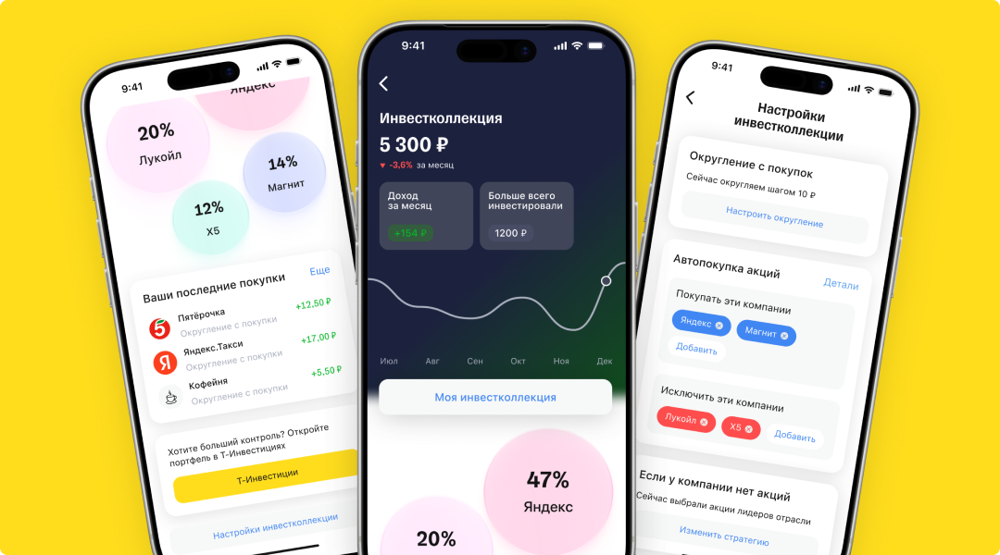
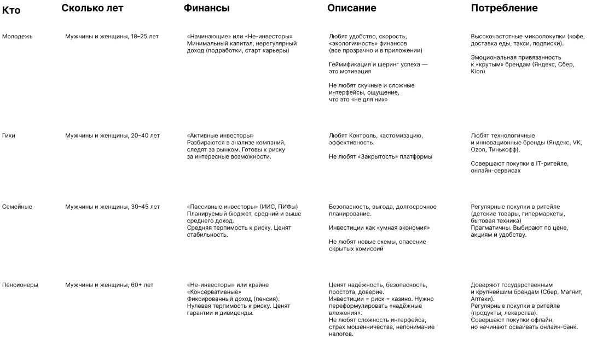
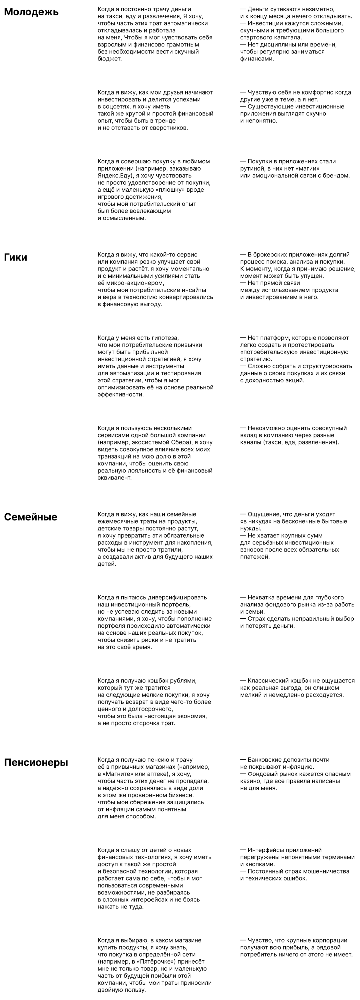
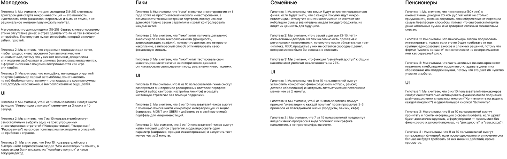
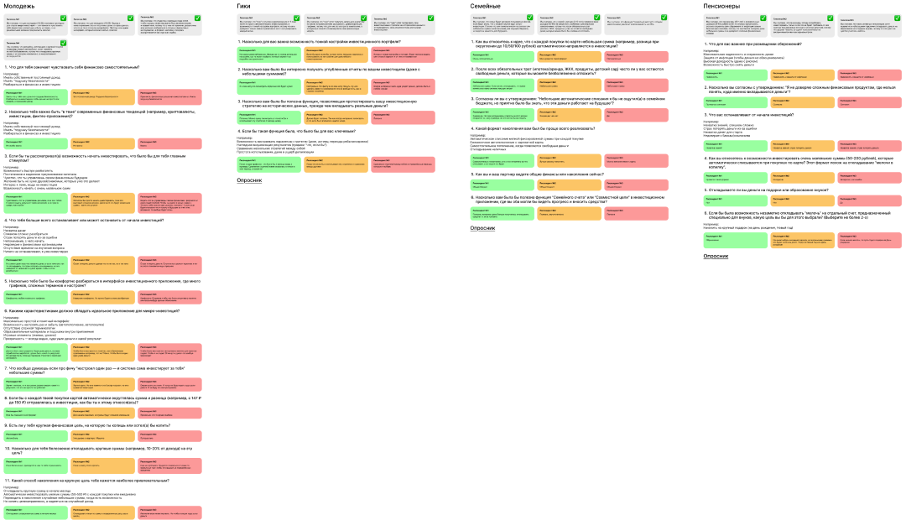
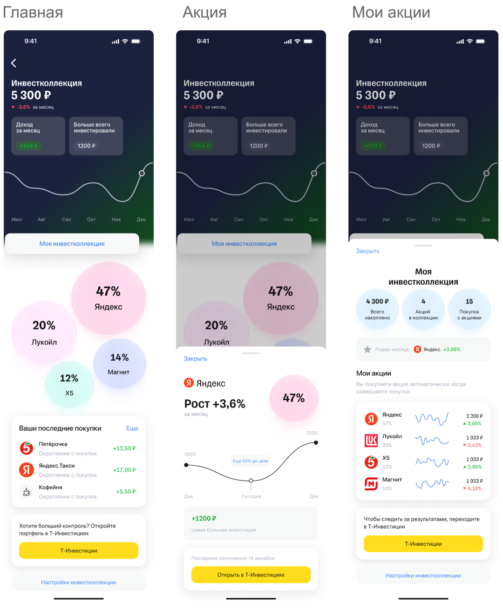
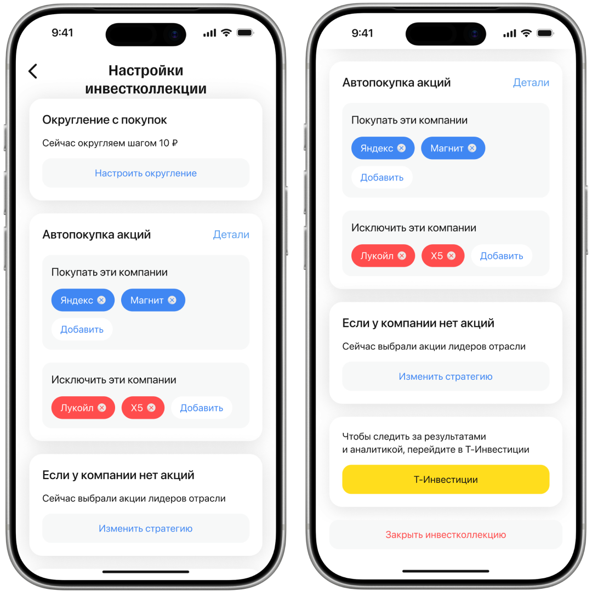
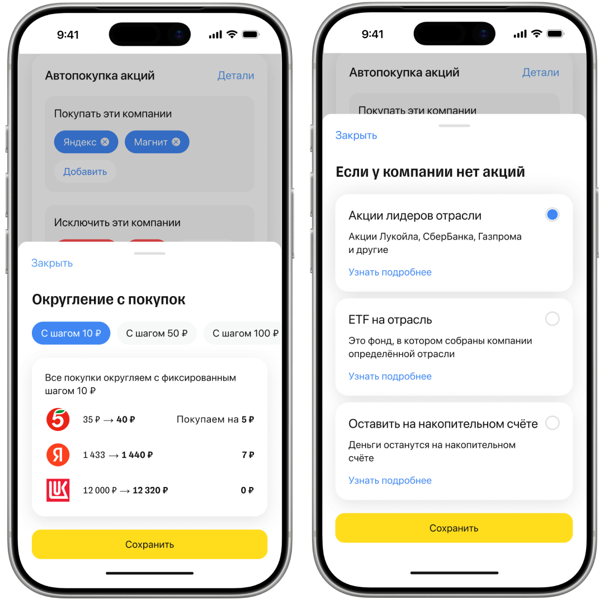

Интеграция инвестколлекции в онлайн-банкинг
Инвестиционная фича для банковского приложения: низкий порог входа, округление повседневных покупок и автоматическая покупка акций.

О проекте
Внедрить в банковское приложение инвестиционное решение с низким порогом входа, понятное пользователям без опыта в инвестициях.
Решение должно интегрировать инвестирование в повседневные расходы и сделать процесс вовлекающим за счёт простых и игровых механик.
Аудитория
Для лучшего определения целей и потребностей пользователей выделены сегменты аудитории и составлены Jobs-to-be-done для каждого сегмента.


Исследование
Выделен ряд гипотез, для их проверки проведены глубинные интервью с пользователями.
Выводы: основные страхи и проблемы, с которыми сталкиваются пользователи.


- Многие хотят начать инвестировать, но сталкиваются со страхом сложности, нехваткой знаний и ощущением, что нужен крупный стартовый капитал
- Пользователи регулярно тратят деньги на повседневные сервисы — такси, доставку, подписки — и воспринимают эти расходы как «деньги в никуда»
- Финансовые инструменты кажутся скучными и сложными, тогда как игровые механики воспринимаются легко и вызывают интерес
- Покупки приносят удовольствие, но часто сопровождаются чувством вины за импульсивные траты
Решение
Как фича решает эти проблемы:
- Снижает порог входа в инвестиции: позволяет начать с малых сумм и без специальных знаний
- Привязывает инвестиции к ежедневным расходам, превращая привычные траты в шаг к финансовому росту
- Использует игровые механики, делая процесс понятным, вовлекающим и мотивирующим
- Меняет восприятие расходов: пользователь чувствует, что он не просто тратит деньги, а инвестирует в своё будущее
Главный экран
На главной странице отображается доля акций конкретной компании в общем портфеле, а также доступен просмотр динамики изменения акций компании. В разделе отслеживания представлена информация об инвестиционной коллекции:
- Количество акций
- Общая сумма накоплений
- Количество сделок по акциям

Настройки инвестирования
Пользователь управляет параметрами инвестирования:
- Округление покупок — пользователь задаёт сумму, до которой округляется каждая покупка, разница автоматически направляется на инвестирование
- Автоматическая покупка акций — округлённая сумма покупает акции без ручного подтверждения
- Управление компаниями — можно исключить отдельные компании из списка для автопокупки
- Обработка округлённой суммы при отсутствии акций — если у компании нет доступных акций, пользователь выбирает: направить на другую компанию, в общую инвестколлекцию или оставить без инвестирования


Результат
После внедрения решения ожидается рост конверсии в покупку акций, увеличение вовлечённости пользователей и снижение барьера входа в инвестиции.